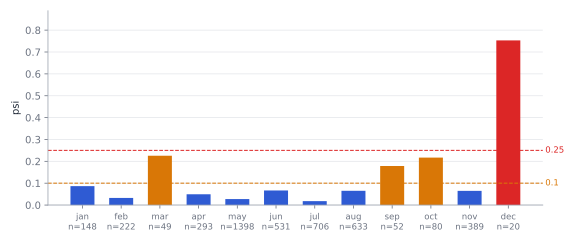

Population stability index#
psi_table() compares the distribution of a variable in two samples, typically the development sample and a later monitoring sample. Group both samples with the same edges or labels before calling it. csi_table() measures how much such a change moves a scorecard’s score; see Characteristic stability index.
Stability is monitored once a model is in use, on samples grouped as its binning specification groups them. Model monitoring then repeats the PSI and the measures of Model performance period by period.
Definition#
For group \(i\), let \(q_i\) be its share of the reference sample and \(p_i\) its share of the current sample. Then
Each contribution is zero or positive. PSI describes distribution change; it does not use the outcome label.
A worked example#
Missing values form their own group, and categories appearing in only one sample are retained. Their empty cells are smoothed exactly as in Weight of evidence and information value, so every contribution stays finite.
>>> import pandas as pd
>>> from kivi.stability import psi_table
>>> reference = pd.Series(["A", "A", None])
>>> current = pd.Series(["B", None, None])
>>> psi_table(reference, current).round(4)
reference current reference_share current_share psi
bin
A 2 0 0.5714 0.1429 0.5941
NaN 1 2 0.2857 0.5714 0.1980
B 0 1 0.1429 0.2857 0.0990

How psi_table computes the example. Missing values form a group of their own. A group that is empty in one sample (outlined) counts as 0.5 before the shares are taken, so that its contribution stays finite.#
When only the counts per group are available, for example from a monitoring report, psi() gives the total from the counts of each sample in the same group order:
>>> from kivi.stability import psi
>>> round(psi([2, 1, 0], [0, 2, 1]), 4)
0.8912
Stable and shifted samples#
Two samples from the same population give a PSI close to zero. When the population changes, the bins that moved stand out. Below, the current sample is replaced by single customers only, who are much younger than the reference.
>>> from kivi.binning import bin_edges
>>> from kivi.datasets import load_bank
>>> data = load_bank()
>>> sample = data.iloc[:3000]
>>> edges = bin_edges(sample["age"], bins=5)
>>> before = pd.cut(sample["age"], edges)
>>> single = data[data["marital"] == "single"]
>>> shifted = psi_table(before, pd.cut(single["age"], edges)).sort_index()
>>> shifted[["reference_share", "current_share", "psi"]].round(3)
reference_share current_share psi
bin
(-inf, 32.0] 0.234 0.521 0.230
(32.0, 36.0] 0.177 0.194 0.002
(36.0, 42.0] 0.196 0.154 0.010
(42.0, 51.0] 0.213 0.099 0.087
(51.0, inf] 0.180 0.032 0.258
>>> print(f"PSI = {shifted['psi'].sum():.3f}")
PSI = 0.586

Left: the remaining customers look like the reference sample. Right: single customers crowd into the youngest bin, and the youngest and oldest bins contribute most of the PSI.#
Reading the result#
Column |
Meaning |
|---|---|
|
Observed counts in each group. |
|
\(q_i\) and \(p_i\) after smoothing; each column sums to 1. |
|
The group’s contribution. Sum the column to obtain total drift. |
Note
A common convention reads a PSI below 0.1 as a small shift, 0.1 to 0.25 as a moderate shift and above 0.25 as a large shift. The thresholds depend on the number of bins and on the smoothing rule, so recheck them when moving analyses from 0.2.x.
Monitoring over time#
In production, PSI is computed for every period against the development sample and compared with the conventions above. The bank data record the month of the last contact but not the year, so the months below mix several years; read them as an example of a monitoring report.
>>> psi_by_month = pd.Series({
... month: psi_table(before, pd.cut(group["age"], edges))["psi"].sum()
... for month, group in data.groupby("month")
... })
>>> psi_by_month.sort_values(ascending=False).round(3).head(4)
dec 0.753
mar 0.226
oct 0.217
sep 0.179
dtype: float64
>>> data["month"].value_counts()[["dec", "mar", "oct", "sep"]].tolist()
[20, 49, 80, 52]

PSI of age for each contact month against the reference sample, with the number of customers under each month.#
The months that cross the thresholds are also the smallest. With 20 customers, the December value mostly reflects sampling noise. Set a minimum sample size before a high PSI raises an alert.
For a model in production, stability_table() computes this table for every variable at once, and monitoring_table() the PSI of the score together with the outcomes and the discrimination of each period; see Model monitoring.
Characteristic stability index#
PSI shows that a distribution has moved, but not what the move does to the score. The characteristic stability index (CSI) weights the change of each group’s share with the scorecard points \(s_i\) of the group:
The CSI is the change of the variable’s average points from the reference to the current sample: a negative CSI means that the variable now gives fewer points on average. Over all the variables of a scorecard, the CSI values add up to the change of the average score. Since the shares of each sample sum to 1, adding the same number to the points of every group leaves the CSI unchanged, so only the differences between the groups matter.
Note
Some texts call the PSI of a single variable its CSI. kivi follows the score-weighted definition of the characteristic analysis report; for the PSI of a variable, use psi_table() on its groups as above.
The example uses the scorecard of Scorecard. Fit the WOE of four variables on the development sample and turn the model into points:
>>> import numpy as np
>>> from kivi.scorecard import points_table
>>> from kivi.stability import csi_table
>>> from kivi.woe import woe_table
>>> development, monitoring = data.iloc[:3000], data.iloc[3000:]
>>> age_edges = np.array([-np.inf, 25, 35, 45, 55, 65, np.inf])
>>> def to_groups(frame):
... groups = frame[["poutcome", "contact", "housing"]].copy()
... groups["age"] = pd.cut(frame["age"], age_edges)
... return groups
>>> dev_groups, mon_groups = to_groups(development), to_groups(monitoring)
>>> tables = {column: woe_table(dev_groups[column], development["target"]) for column in dev_groups}
>>> coefficients = {"poutcome": 0.899, "contact": 0.658, "housing": 0.691, "age": 0.714}
>>> scale = dict(pdo=20, base_score=600, base_odds=50)
>>> table = points_table(tables, coefficients, -2.028, **scale)
csi_table() takes the groups of both samples and the points of the variable’s groups, here the rows of the points table for age:
>>> age = csi_table(dev_groups["age"], mon_groups["age"], table.loc[["age"]])
>>> age[["reference_share", "current_share", "points", "csi"]].round(4)
reference_share current_share points csi
bin
(-inf, 25.0] 0.0267 0.0204 120.0498 -0.7546
(25.0, 35.0] 0.3460 0.3307 137.0775 -2.0968
(35.0, 45.0] 0.3067 0.3077 139.8369 0.1434
(45.0, 55.0] 0.2127 0.2288 136.4122 2.2004
(55.0, 65.0] 0.0917 0.0901 135.6178 -0.2162
(65.0, inf] 0.0163 0.0224 113.4475 0.6830
The shares are not smoothed, unlike those of psi_table. A contribution has no logarithm, so an empty group contributes a finite amount as it is, and a smoothed share would credit an empty group with customers it does not have: the sum would no longer be the change of the average points.
A characteristic analysis report lists both indices for every variable of the scorecard. The CSI column adds up to the change of the average score, here less than a fifth of a point:
>>> def stability_report(reference, current):
... return pd.DataFrame({
... column: {
... "psi": psi_table(reference[column], current[column])["psi"].sum(),
... "csi": csi_table(reference[column], current[column], table.loc[[column]])[
... "csi"
... ].sum(),
... }
... for column in coefficients
... }).T
>>> report = stability_report(dev_groups, mon_groups)
>>> report.round(4)
psi csi
poutcome 0.0031 -0.4595
contact 0.0082 0.3520
housing 0.0000 -0.0381
age 0.0055 -0.0408
>>> print(f"change of the average score: {report['csi'].sum():.2f} points")
change of the average score: -0.19 points
The two indices answer different questions. Single customers, from the shifted sample above, have a very different age distribution, but the age bands they crowd into have about the same points as the others, so age lowers their average score by less than half a point:
>>> stability_report(dev_groups, to_groups(single)).round(4)
psi csi
poutcome 0.0050 -0.6173
contact 0.0119 -0.9260
housing 0.0050 -0.4637
age 0.5311 -0.4126
A group without points, such as a category that the development sample did not have, raises an error unless unseen_points gives the points that its customers receive. These are points, not a WOE: if woe_transform() encoded the category with unseen=0.0, pass the points of a WOE of 0, woe_to_points() of a one-row frame of zeros, which are the same for every variable.
Sample weights#
For weighted samples, pass reference_weights and current_weights to psi_table(); the counts are then sums of weights. csi_table() takes the same two arguments, and its shares are then shares of the total weight of each sample.